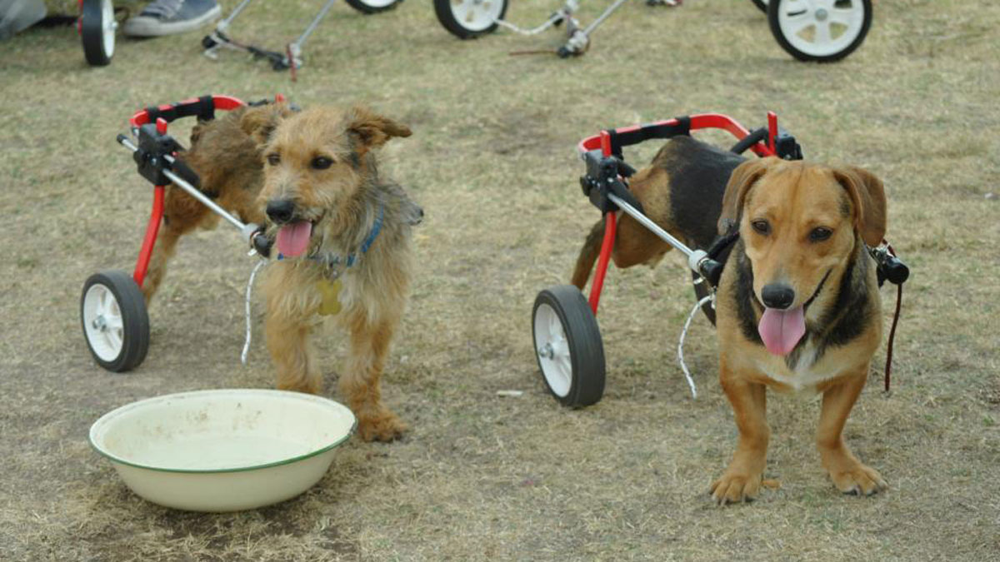

Corazones Rescatados
Juntos construimos un hogar para cada corazón.

Compasión en Acción
Ellos tienen amor para dar, tú puedes darles un hogar.

Manos que Salvan
Huellas de amor que merecen un hogar.